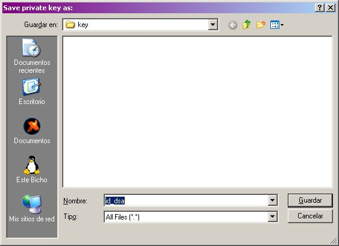
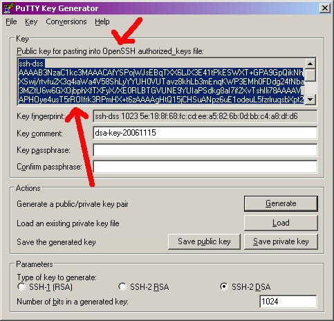

Generación de claves SSH en Windows paso por paso
Extraído de las
FAQ.
-
Desde el directorio
.\util del agente Pandora FMS para
windows ejecutamos puttygen.exe.
Generamos claves SSH-2_DSA, 1024:

-
Pulsamos «Generate»
para generar la clave.
Exportamos la clave a formato OpenSSH

-
No elegimos contraseña, con lo cual pulsamos «Sí»:

-
Guardamos la clave como
C:\pandora\keys\id_dsa:

-
Ahora copiamos la clave pública al portapapeles:

-
Pegamos la clave en un nuevo fichero
C:\pandora_agent\keys\id_dsa.pub,
y debemos también añadirla al fichero /home/pandora/.ssh/authorized_keys.